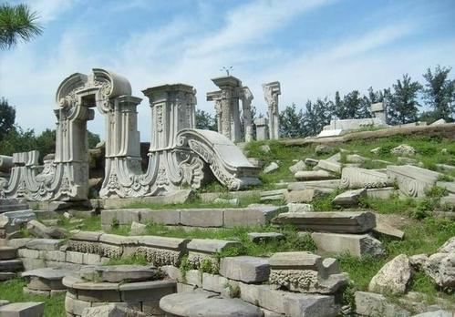
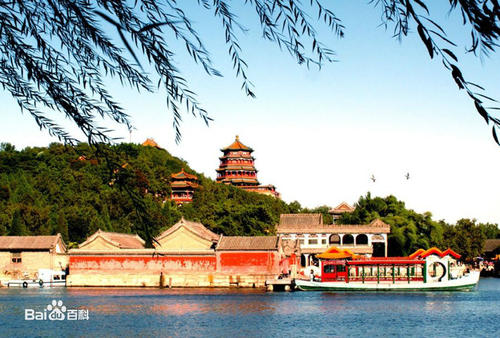
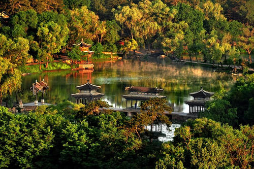
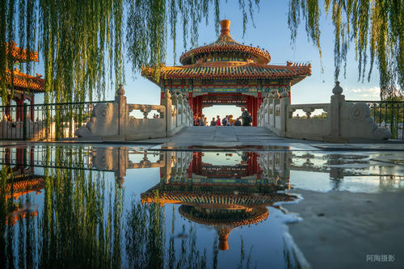

园囿建筑
中国是世界上最早进行造园活动的国家之一，最早的园林便是皇家苑囿。财富的积累，使历代帝王在构建华美宫室之外，兴建各种园林、围场，开成皇室独享的御花园。皇家苑囿满足了帝王之家的琴、棋、射、骑等宴游之乐，在掇山理水之间，构筑了华美殿宇，其装修彩绘，无一不是斥资无数的瑰丽建筑，是中国园林建筑的极至表现。《皇家园囿建筑》收录现存的明、清皇家苑囿，分北京与承德两大地区，按北海公园、颐和园、圆明园、承德避暑山庄依序介绍，远眺、近观，与您同游皇家御园的绚烂色彩。
典型建筑
圆明园

水主题元素
圆明园的园林造景多以水为主题，因水成趣，其中不少是直接吸取江南著名水景的意趣。圆明园后湖景区，环绕后湖构筑九个小岛，是全国疆域《禹贡》“九州”之象征。各个岛上建置的小园或风景群，既各有特色，又彼此相借成景。北岸的上下天光，颇有登岳阳楼一览洞庭湖之胜概，“垂虹驾湖，蜿蜒百尺，修栏夹翼，中为广亭。纹倒影，滉漾楣槛间，凌空俯瞰，一碧万顷”。西岸的坦坦荡荡，酷似杭州玉泉观鱼，俗称金鱼池。“凿池为鱼乐国，池周舍下，锦鳞数千头。”圆明园西部的万方安和，房屋建于湖中，形作卍字，冬暖夏凉，遥望彼岸奇花缬若绮绣。雍正皇帝喜欢在此居住。圆明园北部的水木明瑟，用泰西（西泽）水法引水入室，转动风扇，“林瑟瑟，水泠泠，溪风群籁动，山鸟一声鸣”。乾隆皇帝喜欢在此消暑。长春园西湖中的海岳开襟，在白玉石圆形巨台上建有三层殿宇，远远望去好似海市蜃楼一般
福海之中的蓬莱瑶台，取材于神话中的蓬莱仙岛，原名蓬莱洲。相传，秦始皇曾派遣一个名叫徐福的人，率领千余名童男童女，出海东渡，去替他寻仙境、求仙药，以企长生不老。这当然只能是“海客谈瀛洲，烟涛微茫信难求”。而雍正皇帝则让工匠在圆明园的东湖之中用嶙峋巨石堆砌成大小三岛，象征传说中的蓬莱、瀛洲、方丈“三仙山”，岛上建有殿阁享台，“望之若金堂五所。玉楼十二”，并按“徐福海中求”的寓意，把东湖命名为“福海”。在福海四岸另外还建有十多处园林佳景。福海，东西、南北各宽五六百米，加上四周小水域，共约35公顷，相当于北海公园的水面。这里水面开阔，景色秀丽，每于端午佳节，在此举行大型龙舟竞渡活动。七月十五日夜，清帝于此观赏河灯。冬日结冰后，皇帝乘坐冰床在福海赏游。福海实际上是圆明园的水上娱乐中心。
建筑风格
圆明园还有个显著特点，就是大量仿建了中国各地特别是江南的许多名园胜景。乾隆皇帝弘历曾经六次南巡江浙，多次西巡五台，东巡岱岳，巡游热河、盛京（即沈阳）和盘山等地。每至一地，凡他所中意的名山胜水、名园胜景，就让随行画师摹绘成图，回京后在园内仿建。据不完全统计，圆明园的园林风景，有直接摹本的不下四五十处。杭州西湖十景，连名称也一字不改地在园内全部仿建。正所谓：谁道江南风景佳，移天缩地在君怀
乾隆帝南巡之后，在圆明园先后仿建有四处江南名园。其中之一即福海西北的安澜园。乾隆二十七年南巡时，曾以海宁的陈氏隅园作为行馆，并赐名“安澜园”。乾隆皇帝很喜欢该园结构佳妙，回京后就在圆明园四宜书屋左右，仿其位置进行改建和增建。园成之后，也题名叫“安澜园”，当时仿建的另外三处名园，都在长春园内。一处是乾隆二十三年，在思永斋东院，仿照杭州西湖汪氏园而建的小有天园；一处是乾隆三十二年，仿照江宁（即南京）瞻园而建的如园；一处是乾隆三十七年，仿照苏州著名园林而建的狮子林。如园和狮子林，都分别有16个以上风景点圆明园的这座兰亭，在仄涧中，奇石峭列，激波分注，建有三开间的重檐敞亭。乾隆四十四年，收集到历代书法名家“兰亭序”帖6件，再加上大学士于敏中和乾隆皇帝自己的手迹，合为“兰亭八柱册”。乾隆皇帝让把此亭改建为八方，并换成石柱，每柱刻一帖，这就是著名的圆明园兰亭八柱。廓然大公，后来也总称双鹤斋，仿无锡惠山的寄畅园而建。这一景的北半部，是乾隆中叶，仿照盘山静寄山庄的云林石室的山石，叠石而成的。嘉庆诗赞“双鹤斋”：结构年深仿惠山，名园寄畅境幽闲。曲蹊峭茜松尤茂，小洞崎岖石不顽。人们知道颐和园的谐趣园，是仿惠山寄畅园建的，其实，当时在圆明园也仿建有寄畅园。只是两次仿建意境各有千秋。武陵春色，摹写的是陶渊明《桃花源记》的艺术意境。建自康熙末年，雍正朝时叫桃花坞，曾是弘历读书的地方，书室叫“乐善堂”。此景，号称有山桃万株。苏州阊门内旧有一处桃花坞，相传是唐伯虎的故居。圆明园的桃花坞，虽然袭合诸多方面突破了官式规范的束缚，广征博采，形式多样。
颐和园

颐和园，中国清朝时期皇家园林，前身为清漪园，坐落在北京西郊，距城区15公里，占地约290公顷（2.9平方千米），与圆明园毗邻。它是以昆明湖、万寿山为基址，以杭州西湖为蓝本，汲取江南园林的设计手法而建成的一座大型山水园林，也是保存最完整的一座皇家行宫御苑，被誉为“皇家园林博物馆”。
清朝乾隆皇帝继位以前，在北京西郊一带，建起了四座大型皇家园林。乾隆十五年（1750年），乾隆皇帝为孝敬其母崇庆皇太后动用448万两白银在这里改建为清漪园，形成了从现清华园到香山长达二十公里的皇家园林区。咸丰十年（1860年），清漪园被英法联军焚毁。光绪十四年（1888年）重建，改称颐和园，作消夏游乐地。光绪二十六年（1900年），颐和园又遭“八国联军”的破坏，珍宝被劫掠一空。清朝灭亡后，颐和园在军阀混战和国民党统治时期，又遭破坏。1961年3月4日，颐和园被公布为第一批全国重点文物保护单位，与同时公布的承德避暑山庄、拙政园、留园并称为中国四大名园，1998年11月被列入《世界遗产名录》。2007年5月8日，颐和园经国家旅游局正式批准为国家5A级旅游景区。 2009年，颐和园入选中国世界纪录协会中国现存最大的皇家园林。
主要景点
苏州街
苏州街又称“买卖街”，是后湖两岸仿江南水镇而建。清漪园时期岸上有各式店铺，如玉器古玩店、绸缎店、点心铺、茶楼、金银首饰楼等。店铺中的店员都是太监、宫女妆扮。皇帝游幸时开始“营业”。后湖岸边的数十处店铺于咸丰十年（1860年）被列强焚毁，1986年重建
万寿山
万寿山属燕山余脉，高58.59米。建筑群依山而筑，万寿山前山，以八面三层四重檐的佛香阁为中心，组成巨大的主体建筑群。从山脚的“云辉玉宇”牌楼，经排云门、二宫门、排云殿、德辉殿、佛香阁，直至山顶的智慧海，形成了一条层层上升的中轴线。东侧有“转轮藏”和“万寿山昆明湖”石碑。西侧有五方阁和铜铸的宝云阁。后山有西藏佛教建筑和五彩琉璃多宝塔。山上有景福阁、重翠亭、写秋轩、画中游等楼台亭阁。在居中部位建置一组体量大而形象丰富的中央建筑群。这组大建筑群包括园内主体建筑物──帝、后举行庆典朝会的“排云殿”和佛寺“佛香阁”。与中央建筑群的纵向轴线相呼应的是横贯山麓、沿湖北岸东西逶迤的“长廊”。
四大部州
四大部州在万寿山后山中部，是汉藏式的建筑群。占地2万平方米，因山顺势，就地起阁。前有须弥灵境（现为平台），两侧有3米高的经幢，后有寺庙群主体建筑香岩宗印之阁。四周是象徵佛教世界的四大部洲——东胜身洲、西牛贺洲、南赡部洲、北俱卢洲和用不同形式的塔台修建成的八小部洲。南、西南、东北、西北还有代表佛经“四智”的红、白、黑、绿四座喇嘛塔。塔上有十三层环状“相轮”，表示佛经“十三天”。塔型别致，造型端庄美观。四大部洲和八小部洲中间有两个凹凸不平的台殿，一个代表月台，一个代表日台，象征着日月环绕佛身。
智慧海
智慧海是万寿山顶最高处一座宗教建筑，是一座完全由砖石砌成的无梁佛殿，由拱券结构组成。建筑外层全部精美的黄、绿两色琉璃瓦装饰，上部用少量紫色、蓝色的琉璃瓦盖顶，尤以嵌于殿外壁面的千余尊琉璃佛更富特色。“智慧海”一词为佛教用语，本意是赞扬佛的智慧如海，佛法无边。该建筑虽极像木结构，但实际上没有一根木料，全部用石砖发券砌成的，没有枋檩承重，所以称为“无梁殿”。又因殿内供奉了无量寿佛，所以也称它为“无量殿”。
承德避暑山庄

承德避暑山庄，又名“承德离宫”或“热河行宫”，是世界文化遗产、国家AAAAA级旅游景区、全国重点文物保护单位、中国四大名园之一。山庄位于河北省承德市中心北部，武烈河西岸一带狭长的谷地上，是清代皇帝夏天避暑和处理政务的场所。
避暑山庄分宫殿区、湖泊区、平原区、山峦区四大部分。山庄始建于1703年，1961年被公布为第一批全国重点文物保护单位；1994年列入《世界遗产名录》。
避暑山庄是中国三大古建筑群之一，它的最大特色是山中有园，园中有山，大小建筑有120多组，其中康熙以四字组成36景，乾隆以三字组成36景，这就是山庄著名的72景。康熙朝定名的36景是：
整体布局
山庄整体布局巧用地形，因山就势，分区明确，景色丰富，与其它园林相比，有其独特的风格。山庄宫殿区布局严谨，建筑朴素，苑景区自然野趣，宫殿与天然景观和谐地融为一体，达到了回归自然的境界。山庄融南北建筑艺术精华，园内建筑规模不大，殿宇和围墙多采用青砖灰瓦、原木本色，淡雅庄重，简朴适度，与京城的故宫，黄瓦红墙，描金彩绘，堂皇耀目呈明显对照。山庄的建筑既具有南方园林的风格、结构和工程做法，又多沿袭北方常用的手法，成为南北建筑艺术完美结合的典范。避暑山庄不同于其它的皇家园林，按照地形地貌特征进行选址和总体设计，完全借助于自然地势，因山就水，顺其自然，同时融南北造园艺术的精华于一身。它是中国园林史上一个辉煌的里程碑，是中国古典园林艺术的杰作，享有“中国地理形貌之缩影”和“中国古典园林之最高范例”的盛誉。
主要景点
七十二景
避暑山庄是中国三大古建筑群之一，它的最大特色是山中有园，园中有山，大小建筑有120多组，其中康熙以四字组成36景，乾隆以三字组成36景，这就是山庄著名的72景。康熙朝定名的36景是：
波致爽、芝径云堤、无暑清凉、延薰山馆、水芳岩秀、万壑松风、松鹤清樾、云山胜地、四面云山、北枕双峰、西岭晨霞、锤峰落照、南山积雪、梨花伴月、曲水荷香、风泉清听、濠濮间想、天宇咸畅、暖流暄波、泉源石壁、青枫绿屿、莺啭乔木、香远益清、金莲映日、远近泉声、云帆月舫、芳渚临流、云容水态、澄泉绕石、澄波叠翠、石矶观鱼、镜水云岑、双湖夹镜、长虹饮练、甫田丛樾、水流云在。
外八庙
在避暑山庄周围依照西藏、新疆喇嘛教寺庙的形式修建喇嘛教寺庙群，供西方、北方少数民族的上层及贵族朝觐皇帝时礼佛之用。在避暑山庄的东面和北面，武烈河两岸和狮子沟北沿的山丘地带，共有11座寺院。因分属8座寺庙管辖，其中的8座由清政府直接管理，故被称为“承德外八庙”。庙宇按照建筑风格分为藏式寺庙、汉式寺庙和汉藏结合式寺庙三种。这些寺庙融和了汉、藏等民族建筑艺术的精华，气势宏伟，极具皇家风范。这12座建筑风格各异的寺庙，是当时清政府为了团结蒙古、新疆、西藏等地区的少数民族，利用宗教作为笼络手段而修建的。这些庙宇多利用向阳山坡层层修建，主要殿堂耸立突出、雄伟壮观。
普宁寺
普宁寺景区坐落于避暑山庄东北部武烈河畔，占地5.78万平方米。景区由皇家寺庙群中的普宁寺和普佑寺组成，两座寺庙先后修建于1755年（乾隆二十年），1760年（乾隆二十五年）。取普天之下安宁、保佑天下众生之意。普宁寺内供奉有世界上最大的金漆木雕佛像——千手千眼观世音菩萨，普佑寺是喇嘛研习佛教理论典籍的经学院。这里僧侣云集，香火旺盛，是北方最大的佛教圣地。
北海公园

北海公园（Beihai Park）位于北京市中心区，东邻景山，南濒中南海，北连什刹海 [1] ，属于中国古代皇家园林。全园以北海为中心，全园占地69公顷（其中水面39公顷） [2] 。曾是辽、金、元建离宫，明、清辟为帝王御苑，1925年开放为公园 [3] 。为全国重点文物保护单位、国家AAAA级旅游景区
主要景点
小西天
小西天始建于清乾隆三十三年（1768年），建成于清乾隆三十五年（1770年），是清乾隆皇帝为母亲孝圣皇太后祝寿祈福而建的。主体建筑为极乐世界，总面积达1200平方米，其横梁跨度13.5米，是中国最大的方亭式宫殿建筑，殿四面窗扉、楠扇细镂花纹，殿内高处悬挂金匾，上书“极乐世界”为乾隆御笔，上方为金光灿灿的八角穹窿团龙藻井。殿四面环水，有桥可通，东西南北各有琉璃牌坊一座，四角各有一座小方亭，正南面有一道月牙河，上架一座雕栏石桥。殿内原有南海普陀泥塑一座，山上布有二百二十六尊罗汉佛像，山下绘满海水，以象征佛界普陀胜境，故有“罗汉山”和“海岛”之称
铁影壁
元代遗物，壁呈棕褐色，由中性火山块砾岩雕成，因颜色和质地似铁，故称铁影壁。壁高1.89米，长3.56米，两面浅雕云纹异兽，刻工古朴浑厚。铁影壁原是建德门（今德胜门）外一古庙前的照壁。明初，此壁被移到德胜门内护国德胜庵前（今铁影壁胡同内），民国三十六年（1947年）壁身移至北海公园。1986年北海公园从铁影壁胡同找回基座，从而使这一文物得以复原永安桥
永安桥前身是元代的一座木桥，明代称“太液桥”，乾隆八年（1743年）改建为三曲折，三孔拱券石桥，两侧有望柱48根。1979年时对永安桥进行过全面修葺和加固处理，桥面全部更新并新装88根莲花形望柱和荷叶图案护栏板。石桥连接着有白塔的琼华岛，而且用三曲桥身把南岸的团城城门和琼岛上的永安寺寺门巧妙和谐地连接起来。这座桥的两端有古石狮、有古牌坊，是北海公园内最大的桥梁，其与白塔山合在一起就是“北海”的标志
团城
团城原是太液池中的一个小岛，金代为大宁宫一部分。元代称圆坻，亦称瀛洲。乾隆年间进行较大的修建，增建了玉瓮亭。团城它的平面呈圆形，周砌城砖千仞壁立的小城。城台高出地平 4.6米，周长 276米，面积4553平方米 。东、西两侧城墙下各有随墙门一座，上建门楼，东为昭景，西为衍祥，入门可沿蹬道登至城顶台面。蹬道处各设罩门，城台上建筑布局采取对称中兼以园林的布局手法。承光殿为全城台的中心，其南有玉瓮亭，其北为敬跻堂，组成了城台的中轴线。两侧对称排列，有古籁堂、余清斋东庑和西庑等。朵云亭、镜澜亭高踞假山上。整座城台黄瓦红墙。古建群间，遍植了数十株苍松翠柏